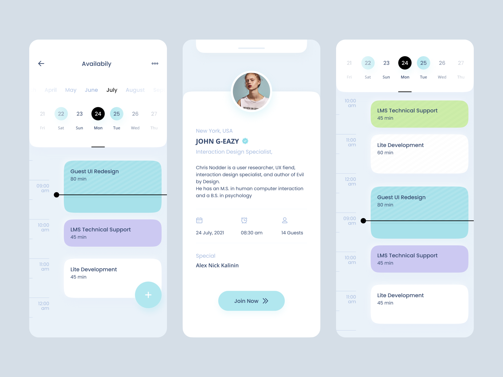
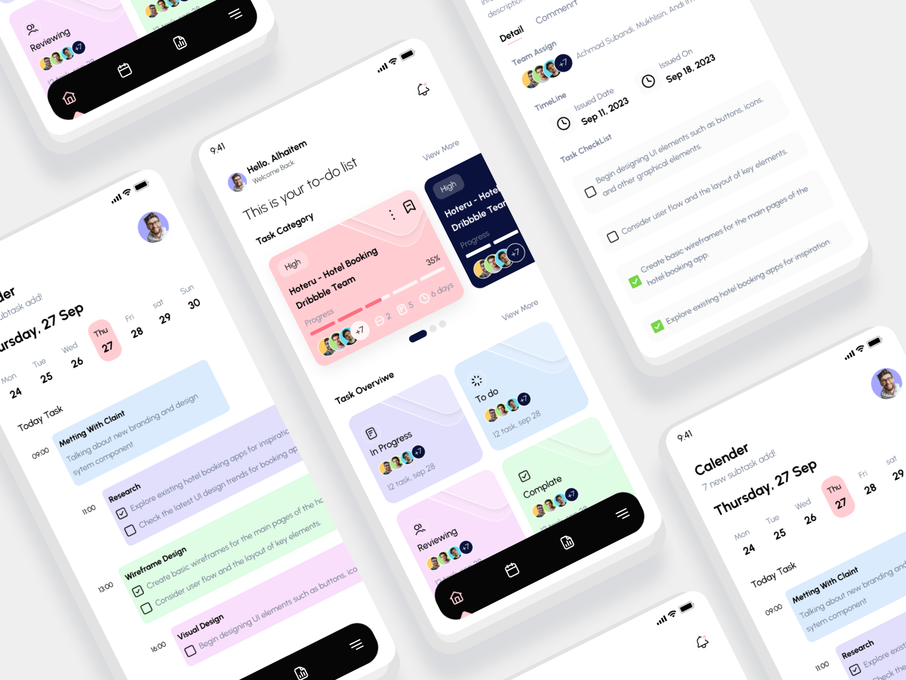

CATEGORY: PRODUCTIVITY TOOLS
Calender app to manage your tasks and events.
Role
UI/UX Designer, Research
Expertise
UI/UX Design
Year
2025

Project Description
The Tesco Bank app redesign project was undertaken to address the limitations of the existing app and bring it in line with modern banking standards. The goal was to create a more intuitive, user-friendly experience by introducing advanced features like QR-based payments, spending insights, and budget tracking. This project was driven by the need to simplify financial management for users while enhancing the overall usability and functionality of the app.
The redesign focused on solving key pain points identified in the current app, such as cumbersome manual transfers, lack of financial planning tools, and poor prioritization of frequently used actions. By leveraging user research, competitive analysis, and iterative design processes, the project aimed to deliver a seamless and empowering banking experience for Tesco Bank customers.
Overview:
The Tesco Bank app redesign is a comprehensive overhaul of the existing banking application, aimed at modernizing its interface and functionality. The project was executed using Figma for design and prototyping, with a focus on creating a clean, modern interface that aligns with Tesco’s brand identity. Through usability testing and iterative improvements, the redesigned app delivers a more efficient and enjoyable banking experience, setting a new standard for Tesco Bank’s digital offerings.
Problem Statement:
The current Tesco Bank app suffers from several limitations that hinder user experience and functionality. One major issue is its outdated workflows, particularly for manual bank transfers, which require users to input lengthy and repetitive details, leading to frustration and potential errors. Additionally, the app lacks essential financial tools, such as budgeting features and spending insights, which are critical for users who want to manage their finances effectively. Another significant drawback is the poor prioritization of frequently used actions, such as transfers, which are buried deep within menus, making them inconvenient to access. Furthermore, the app does not support peer-to-peer payment options, meaning users cannot request money through modern methods like QR codes or shareable links, which are now standard in many competing banking apps. These limitations collectively create a cumbersome and less user-friendly experience for Tesco Bank customers.
Objectives:
The primary objectives of the Tesco Bank app redesign were to simplify money transfers and requests by introducing QR codes and shareable links, making transactions faster and more convenient. Additionally, the redesign aimed to empower users by incorporating budgeting tools and spending insights, enabling them to track expenses and manage their finances more effectively. To enhance usability, frequently used actions, such as recent transactions, were prioritized on the homepage, allowing users to access key features with ease. Finally, the project focused on creating a modern, intuitive interface that aligns with user expectations, ensuring a seamless and enjoyable banking experience.
Target Audience:
Primary Users:
Tesco Bank customers who want a seamless banking
experience.
Secondary Users: Individuals looking for
advanced financial management tools (e.g.,
budgeting, spending insights).
Key Features:
- Spending Insights: Visual breakdown of expenses by category (e.g., food, transportation).
- Budget Tracking: Set and monitor budgets for customizable categories.
- Quick-Access Transactions: Highlight frequent transactions on the homepage for faster transfers.
- Simplified Request Money Flow: Easily request payments via links or QR codes.

Process
This category details the step-by-step approach taken during the project, including research, planning, design, development, testing, and optimization phases.
Research & Planning:
The foundation of the Tesco Bank app redesign
was built on a robust research and planning
phase, ensuring that every design decision was
data-driven and user-focused. To understand the
competitive landscape, I conducted a detailed
analysis of leading banking apps like Revolut,
Monzo, and Starling Bank, identifying best
practices in areas such as QR payments,
budgeting tools, and user interface design. This
competitive benchmarking helped me establish a
clear direction for the project.
Next, I dove into user research by analyzing app
reviews and conducting hypothetical user
interviews to uncover pain points and unmet
needs. Key insights revealed that users were
frustrated with the manual entry of bank details
for transfers, the lack of financial management
tools, and the inconvenient placement of
frequently used actions. Armed with these
findings, I defined the project’s goals: to
simplify money transfers, introduce budgeting
and spending insights, and create a more
intuitive and modern interface. This research
phase ensured that the redesign would not only
address current limitations but also align with
user expectations and industry standards.
Design & Prototyping:
With a clear understanding of user needs and
competitive benchmarks, I moved into the design
phase, leveraging modern design techniques to
create a seamless and visually appealing
experience. I began by developing low-fidelity
wireframes to map out user flows for key
features, such as QR-based payments and budget
tracking. These wireframes allowed me to
experiment with different layouts and
interactions, ensuring that the final design
would be both functional and intuitive.
For the visual design, I adopted a minimalist
and modern approach, using Tesco’s brand colors
(blue and white) to maintain consistency while
introducing subtle gradients and shadows to add
depth. I prioritized accessibility by ensuring
sufficient contrast and readability, and I used
component-based design in Figma to create a
scalable and maintainable design system. This
approach not only streamlined the design process
but also ensured consistency across all
screens.
To bring the design to life, I created an
interactive prototype in Figma, simulating the
user experience of key features like QR payments
and budget tracking. This prototype was
instrumental in visualizing the app’s
functionality and served as a valuable tool for
gathering feedback during usability testing. By
combining modern design principles with a
user-centric approach, I was able to create a
design that was both visually appealing and
highly functional.
Development & Implementation:
The development phase focused on translating the
design into a functional and user-friendly app,
incorporating modern technologies and best
practices to ensure a seamless experience. One
of the key features implemented was QR code
generation and scanning, which allows users to
send and request money instantly without the
need for manual bank details. This feature was
built with security in mind, ensuring that all
transactions were encrypted and compliant with
banking regulations.
Another major addition was the spending insights
feature, which provides users with a visual
breakdown of their expenses by category (e.g.,
food, transportation). This feature leverages
data visualization techniques to present complex
information in an easy-to-understand format,
helping users make informed financial decisions.
Additionally, I introduced budget tracking with
progress bars, enabling users to set and monitor
budgets for customizable categories.
To enhance usability, I prioritized quick-access
recent transactions on the homepage, allowing
users to view and repeat their most frequent
actions with just a few taps. This feature was
designed to save time and reduce friction,
making the app more efficient for everyday use.
Throughout the development process, I
collaborated closely with developers to ensure
that the design was implemented accurately and
that all features functioned as intended. By
combining modern design techniques with a focus
on user needs, I was able to deliver a
redesigned app that not only looks great but
also provides a superior user experience.
Testing & Optimization:
Conducted rigorous testing across various devices and platforms to ensure compatibility and performance. Gathered user feedback through beta testing and iteratively optimized the app based on usability metrics and user satisfaction.
Solution
The resulting AI-powered scheduling app offers a seamless user experience, allowing individuals and businesses to effortlessly manage their schedules.
AI-Powered Recommendations:
The app leverages AI algorithms to analyze user behavior and suggest optimal time slots for meetings, tasks, and events, minimizing scheduling conflicts.
Cross-Platform Synchronization:
Seamless integration with popular calendars like Google Calendar, Outlook, and Apple Calendar ensures that users can manage all their schedules in one place.
Customizable Notifications:
Users can set reminders for tasks and events, customize notification preferences, and stay on top of their schedules without feeling overwhelmed.
Collaborative Scheduling:
Enables teams and businesses to share calendars, schedule group events, and manage collaborative tasks efficiently, enhancing productivity.
Offline Functionality:
Allows users to access their schedules, add tasks, and make changes even without an internet connection, ensuring uninterrupted productivity.
AI-Powered Recommendations:
AI algorithms analyze user preferences, availability, and priorities to generate optimized schedules.

Feature 2
A brief description of the feature goes here.
Feature 3
A brief description of the feature goes here.
Feature 4
A brief description of the feature goes here.
Results
Here, the outcomes and achievements of the project are highlighted, including user feedback, adoption rates, and industry recognition.
Increased Efficiency:
Users report significant time savings and improved productivity through optimized scheduling recommendations.
Positive User Feedback:
High user satisfaction ratings and positive reviews highlight the app's intuitive interface and powerful AI capabilities.
Growing User Base:
The app quickly gained traction among individuals and businesses worldwide, with a steady increase in user adoption and engagement.
Discover How I Revamped & Crafted Impactful Digital Experiences
★
Mobile Apps
App Name 1
This is a short description of the app.
App Name 2
This is a short description of the app.
App Name 3
This is a short description of the app.
Website Designs
Website Name 1
This is a short description of the website.
Website Name 2
This is a short description of the Website.
Website Name 3
This is a short description of the Website.